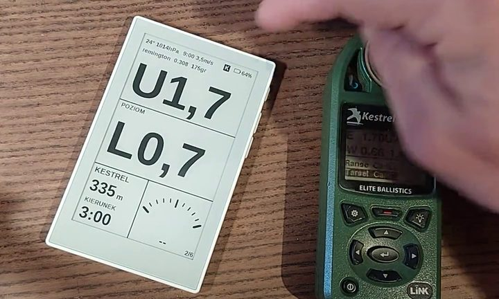

Devices
My own firmware for the reTerminal Sticky, a small computer with an e-paper screen that mounts on a rifle or on the kit.

WorkingsniperSticky
Version 0.6.5 · 9 November 2026
E-paper device
A ballistic calculator on an e-paper screen, mounted next to the scope. It computes corrections with no phone and no network, and reads weather and wind from a Kestrel.
Read more → In development, stage 1
In development, stage 1
stickyTAK
Version 0.1.4 · 10 November 2026
E-paper device and a plugin for ATAK-CIV 5.6 and newer
A backup ATAK screen worn on the kit. It shows the map, your position, markers and alerts, and keeps the last state when the phone dies.
Read more →